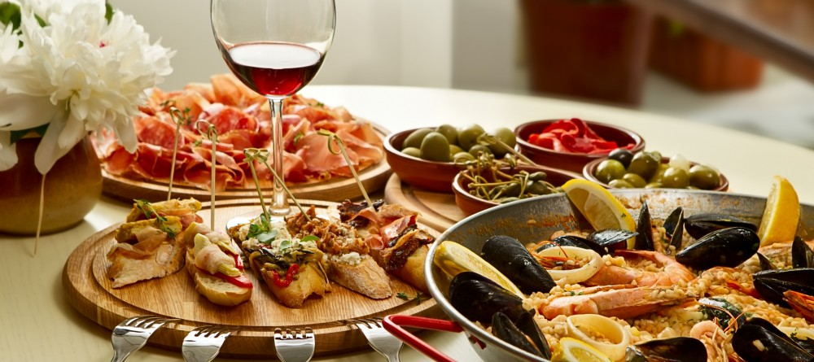

Italian Cuisine
October 20, 2016
Italian cuisine (Italian: cucina italiana [kuˈtʃiːna itaˈljaːna]) has developed through centuries of social and political changes, with roots stretching to antiquity.
Significant changes occurred with the discovery of the New World and the introduction of potatoes, tomatoes, bell peppers and maize, now central to the cuisine but not introduced in quantity until the 18th century.[1][2] Italian cuisine is noted for its regional diversity,[3][4][5] abundance of difference in taste, and it is probably the most popular in the world,[6][7] with influences abroad.[8]
Italian cuisine is characterized by its simplicity, with many dishes having only four to eight ingredients.[9] Italian cooks rely chiefly on the quality of the ingredients rather than on elaborate preparation.[10] Ingredients and dishes vary by region. Many dishes that were once regional, however, have proliferated with variations throughout the country.
Cheese and wine are a major part of the cuisine, with many variations and Denominazione di origine controllata (DOC) (regulated appellation) laws. Coffee, specifically espresso, has become important in Italian cuisine.tensoep (pea soup with ham and smoked sausage), stamppot (mashed potatoes mixed with vegetables, served with meat and gravy) and suddervlees (slowly braised meat). Thanks to its proximity to the sea, fish and seafood also feature heavily on Dutch menus, especially plaice, mackerel, eel, mussels and shrimp. The Dutch are also crazy for their friet (chips/fries)! Even upscale restaurants often serve their meals with a side of friet and mayonnaise.
Read More